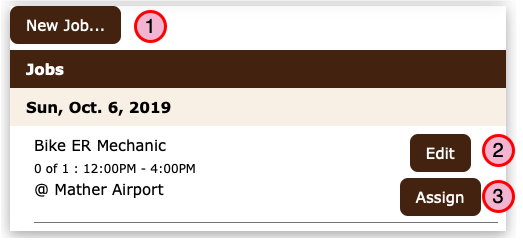
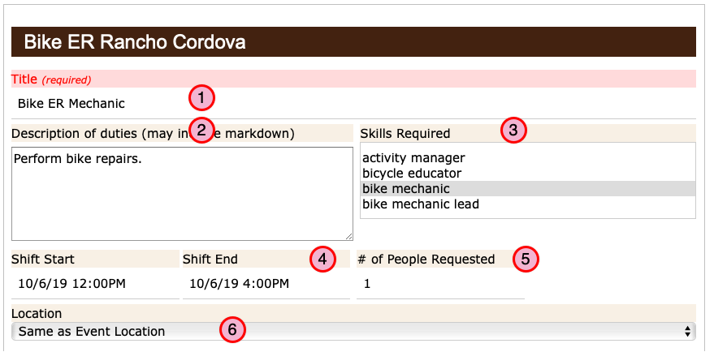

How to manage Job records¶
(Jump to How to Create or Edit a Job record)
Most Events will require one or more people to do one or more Jobs. It’s possible to have an Event with no jobs if, for example you only want the event to appear on the calendar. When staff and volunteers are using the system sign up, they are actually signing up for a Job.
Each Job record will have a start time and end time and will request one or more people for the job.
The dates and times for each job may be different from the date and times of the event to which the job is associated.
How to Create or Edit a Job record¶
As an Admin or Event coordinator you will be able to create and edit Jobs, assign users to work a Job and remove a user from a job.
Create or Open a Job Record¶
From an Event record…

To create a new job, click the New Job button.
Or… click the Edit button to open an existing Job record.
Or… click the Assign button to assign users to work the job.
{kind=link}
Edit a Job Record¶

Enter a Job title
- Create a description of the job
This is a public facing description of what the job is about.
This is a good opportunity to give folks a reason to sign up for the job.
The description may use Markdown syntax to create a rich presentation when viewed by visitors. (Or you can just type something.)
- Select the Skills Required.
Select one or more Roles that a user must have associated with their profile in order to sign up for this Job.
In order for this job to be listed in the sign up page, a user must be logged in and they must have at lease one of the required roles.
Note
Roles are hierarchical based on the role’s “Rank” so that a user with a role that has a higher rank than the rank of any of the roles selected will also be elegible to sign up for the job.
Enter the start and end times for the job.
- Enter the number of people you need for this job.
This will limit the number of people who can sign up.
- Set the location for the job.
Set this if the job location is not the same as the default location for the event.
{kind=link}
Assign a User¶
As an Administrator or the Event coordinator, you have the ability to assign a job to a user to work the event.